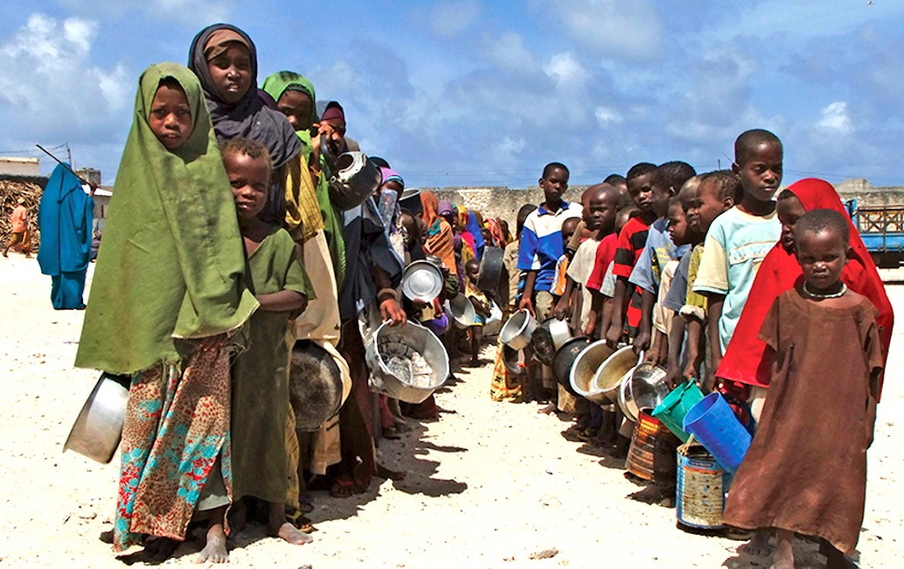

By GGI Insights | July 16, 2024
Hunger not only causes immediate suffering but also undermines economic growth and development in affected areas. To achieve this goal, there needs to be a focus on increasing agricultural productivity, improving access to food, and promoting sustainable food systems. In contemplating these objectives, we must also consider the big picture by asking, how much would it cost to end world hunger? This question is crucial to strategize financial plans and mobilize resources effectively.
The devastating effects of COVID-19, the burdensome toll of a deteriorating climate, and the exasperating aftermath of economic upheaval have laid bare the global dependency shared by countries. Subsequently, these worldwide crises hit those most disadvantaged the hardest.
To effectively address world hunger, it's critical to look beyond short-term solutions and aim for a comprehensive approach that includes zero hunger as a key goal. Donating food and clothes to local charity organizations helps in immediate relief but doesn't solve the underlying issues. Activists and policymakers need to focus on sustainable solutions that lead to zero hunger, such as promoting agricultural efficiency, eliminating food waste, and creating equitable food distribution systems. So, while individual efforts are valuable, a multi-faceted strategy targeting zero hunger will make a lasting difference.

According to the United Nations and current world hunger trends, hunger is one of the greatest threats to humanity, with an estimated 800 million people living in a state of food insecurity. But it’s also an issue that is heartbreakingly solvable - and in this blog, we’re going to explore precisely how ending world hunger can become a reality.
Some viable solutions and actions can be taken not just to eradicate hunger but to ultimately eradicate it, which aligns with the sustainable development goals.
Individuals and organizations have many ways to contribute to the humanitarian efforts designed to prevent famine. Donating funds to trusted sources, such as the World Food Programme, Save the Children, FAO, or UNICEF, is one means of helping to alleviate food insecurity.
Making an effort to raise awareness about this matter by contacting legislatures, participating in campaigns, or sharing pertinent data on social media all play an essential role in eradicating chronic hunger and poverty Furthermore, there is the option of volunteering with response teams actively assisting those impacted by famine.
Funds may be procured through fundraising events or campaigns, and educating oneself on the underlying causes of this challenge is essential for effecting change. Additionally, reducing food waste and being mindful of personal consumption can ensure more resources are available to those in need.
In recent years, human bodies such as WFP, who possess extensive networks on the ground, often serve as the sole barrier between families within famine-stricken areas and the peril of starvation. Governments, businesses, and benefactors have a unique chance to guarantee that nobody is left without assistance by organizing WFP's unobligated funds to offer millions of individuals provisions, financial allotments, and the assistance they require to survive the year.
Investing in Smallholder Farmers
Investing in smallholder farmers can be an effective way to address food insecurity and promote sustainable agriculture. Smallholder farmers are often responsible for most food production in developing countries, but they often face challenges that limit their productivity and income. Here are a few ways that smallholder farmers can be supported:
Providing access to credit
Smallholder farmers often need help accessing credit, which can limit their ability to invest in their farms and improve their yields. Giving small loans or access to microfinance can help farmers to invest in their farms and increase their productivity.
Improving access to markets
Many smallholder farmers need help to get their products to market, either because they need more infrastructure or cannot compete with larger producers. Providing smallholder farmers access to markets through direct sales or cooperatives can help increase their income and improve their livelihoods.